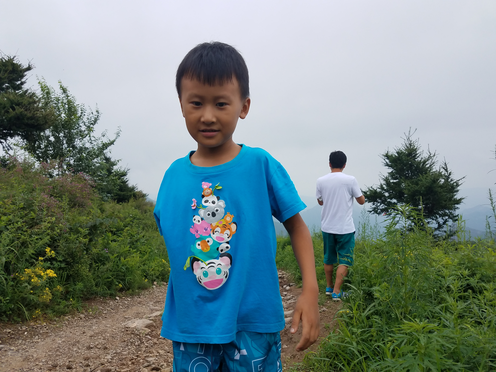

在路上 On the Way

马尔代夫的盛夏
2017 夏天 · Maldives
第一次见到那么透明的海水和那么白细的沙滩。小小的身影在岸边执着地挖沙子，海风吹在脸上，带来全是关于夏天的记忆。那是一个不需要做复杂计划，只需要享受阳光和假期的旅行。

薄雾升起的山路
2017 秋天 · Mountains
穿过还带着湿气的晨雾，走在两边都是绿色的山路上。走得很慢，不时停下来研究路边的植物或者形状奇特的石头。虽然是阴天，但穿着蓝色衣服走在山里的样子，成了旅途中很安静特别的一个画面。

山谷里的一次徒步
2021 秋天 · Valley Hike
这已经不仅仅是玩耍，而是更需要体力的户外徒步。带上装备，走过狭窄的路段，站在稍微高一点的地方看景色，不仅长高了，面对自然时的态度也变得勇敢和平静。

山间温泉的悠长假日
2022 夏天 · Hot Springs Resort
旅途越来越有一种从容感。在阳光充足的下午泡在池子里，整理泳镜、感受水波，哪怕没有去冲浪爬山，光是这种完全放松下来的姿态，就是一次完美的出游状态了。